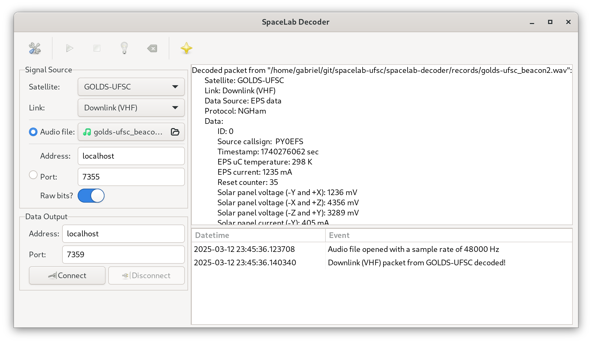

Overview
The SpaceLab Decoder is a software application designed to decode satellite telemetry data from audio files or UDP streams. It supports multiple satellite protocols, including NGHam and AX100-Mode5, and provides a graphical user interface (GUI) built with GTK for ease of use. The software is particularly useful for amateur radio operators, satellite enthusiasts, and researchers who need to decode and analyze data from small satellites or CubeSats.
The application allows users to:
Load audio files containing satellite signals (e.g., WAV files) and decode the embedded telemetry data.
Receive and decode real-time satellite data via UDP streams.
Visualize the decoded data in a user-friendly interface.
Save decoded packets to a log file for further analysis.
Plot the spectrum of the input audio signal for signal analysis.
The software is designed to be modular, allowing for easy integration of new satellite protocols and configurations. It also supports multiple satellites, with configurations stored in JSON files.
A list of known satellites that are planned to use this software so far are presented below:
Most of the satellites of the list above are developed (or in development) by the same research group: the Space Technology Research Laboratory (SpaceLab) [3], from Universidade Federal de Santa Catarina (Brazil).
The Software
{kind=link}
The objective of this software is to become the “universal” software of the Spacelab’s Satellites to decode the data from any of its satellites.
The main ways to achieve that are
to use a recorded audio file in the Wave format;
and real time decoding working in parallel with GQRX [4].
This application is written in Python, and is based on the experience gathered in the applications developed for the FloripaSat-1 mission. For telecommand encoding and transmission, there is also another application developed by the same research group, called SpaceLab Transmitter [5].
The software also countains a logging system to register the events happening in the application.
More details of the software are described in the next sections of this documentation.
The SpaceLab Decoder is a powerful tool for decoding satellite telemetry data, whether from audio recordings or real-time UDP streams. Its user-friendly interface and support for multiple protocols make it an essential tool for satellite enthusiasts and researchers. By following the usage instructions, you can easily decode and analyze satellite data, visualize signal spectra, and save your results for further study.